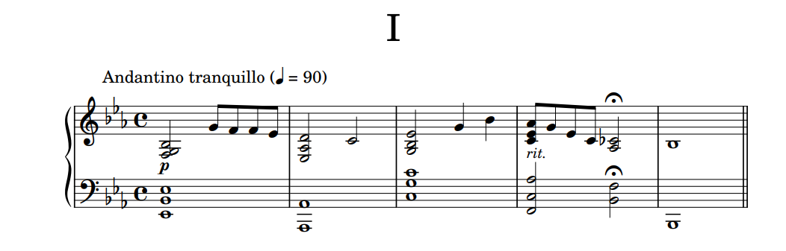
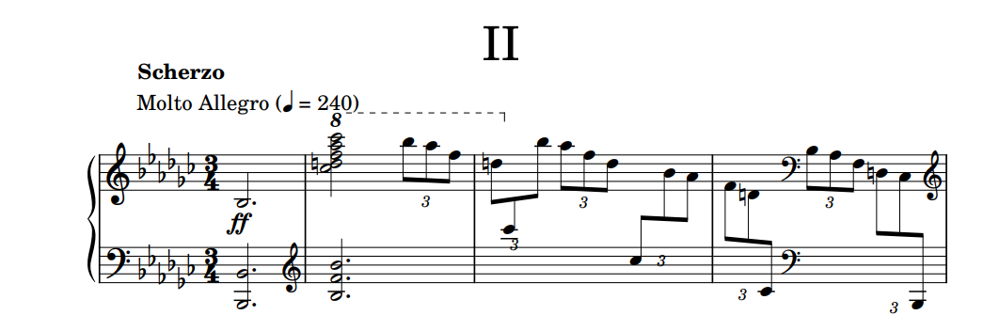
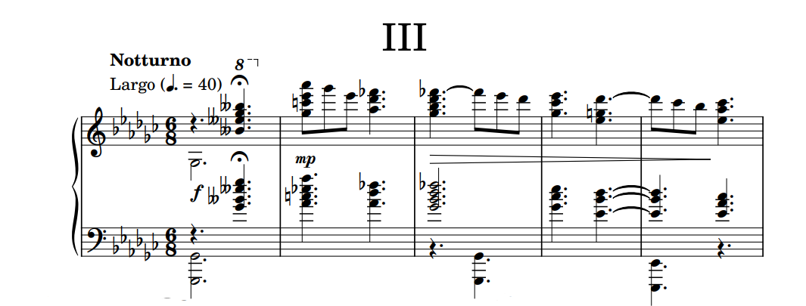
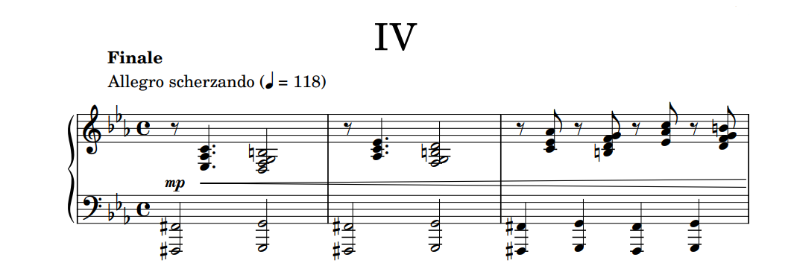

Opus 5
Piano Sonata in E-flat major
2024
Composition No.85
Piano Sonata in E-flat major
2024
Composition No.85
Piano Sonata in E-flat major, Op.5 is a sonata for piano solo composed during my half-year break between May and August 2024 before going to university. It was marked “Composition No.85” being the last piece I finished before my university time started, connecting my high school and university era together. Although it's my first sonata to be released, it's actually my 4th sonata to be composed (2 in 2021 and 1 in 2022). It's also my longest composition in duration up to date at around 22-23 minutes, surpassing my 2nd sonata at 20 minutes.
The sonata was at first not expected to be released at all. I just wanted to practice the structures and composition to be prepared for larger scale works. But after composing the 3rd movement, I realized that I pretty liked it so I decided to release it as Opus 5. The sonata consists of 4 movements, ordered similarly to the classical sonatas but switching the dance movement and the slow movement (like what Chopin did).
"A flashback to high school times, moving on from the past..."
The first movement, "Andante tranquillo," is in E-flat major following the sonata-allegro form without the repetition of the first theme in the recapitulation. It was finished on 4 May 2024 and it's the first time after 2 full years for me to use the sonata form again. The duration of the movement is around 6-7 minutes.
That day I just felt like composing something so I opened up Musescore and started writing. I graduated from high school recently so I wanted to composed something that reminds me of that. The second theme also has some Japanese vibes, maybe from my increasing interest in Japan and my recent Japan trip in March 2024. And here it is. There was actually another version of the development section but it didn't work out. The piece that helped me out was actually Beethoven's Symphony No.5 1st movement that gave me the idea how to create a development section from fragments of the exposition. Credits to Beethoven for that.
The first movement follows the classical sonata-allegro form with a short introduction and a codetta. The introduction is composed of small altered fragments of the first and the second theme, ending with a dominant leading to the theme 1 of the exposition. Theme 1 is in E-flat major before moving to a polyrhythm transition and ends up at the theme 2 in B-flat major. The exposition repeats. In the second repetition, the ending cadence is interrupted by a German augmented 6th leading to the development section in G-flat major, later modulates to A major and back to B-flat major. The polyrhythm transition returns and leads to the recapitulation with only theme 2 in E-flat major. The movement ends with a codetta containing a flashback to the first theme.
"Haha notes go brrr"
The second movement, "Scherzo: Molto Allegro," is in E-flat minor following the scherzo form with a C-flat major trio. It was finished on 6 May 2024 and it's my first time composing a scherzo. The duration of the movement is around 3 minutes.
So after finishing the first movement, I was so motivated that I composed the second movement immediately. I felt like I released my full power into the running notes and it felt really nice. I think the last time I did this much notes was the Ballade Op.4, which was like half a year before. So yeah, literally, I wrote the Scherzo ("a joke") just for fun. To make it more like a joke, I composed the trio section in C-flat major instead of B major. Good luck, pianists! The reference of this movement is Chopin's scherzo of Sonata No.3.
The second movement follows the scherzo (ternary) form with a trio; A-B-A. I started the piece with a quick introduction with a downward arpeggio of Bb(b9) chord leading to the main scherzo theme in E-flat minor. The scherzo theme itself is also in a ternary form with the middle section going through several keys before returning to the home key. The trio section starts in C-flat major with Eb-Gb as the pivot and returns to the scherzo theme using the same introduction chord. The whole scherzo theme repeats towards the end of the movement.
"To the hopes and dreams of the future..."
The third movement, "Notturno: Largo," is in G-flat major following the ternary form ABA'. It was finished on 5 August 2024. The duration of the movement is around 6-7 minutes.
After finishing the second movement, I started the third movement, but somehow it didn't really work out and I ran out of ideas. I composed and discarded the first theme of this movement 2 times before ending up with the third draft which later resulted in the full movement. It was after my university orientation and the first meet that I finally came up with the idea. The movement was composed towards the hopes and dreams of my future; university life and so on. It also reaches the point that I expected of my Ballade, which made me realized that I should release this sonata. Thanks to the middle section. It's also my favorite movement of the sonata.
The third movement follows the ternary form A-B-A'. The piece starts with an introduction with chords from E-double-flat major modulating to the first theme in G-flat major. The first theme itself is also a ternary form with a more flowing theme in the middle. The theme ends with a modulation to F-flat major that ends up in the D-flat major B section instead, leading to the climax of the movement. Then it modulates back to the A theme with a short key change to F-sharp minor and back. The movement ends with a codetta with fragments of the B section in G-flat major.
"Let it be and have fun with it"
The fourth movement, "Finale: Allegro scherzando," is, unlikely to most of the sonatas, in C minor following the sonata-rondo form. It was finished on 10 August 2024 and it's my first time using this form. The duration of the movement is around 6-7 minutes.
The sonata is up to release, so I composed this last movement immediately after finishing the third movement. I, without thinking much, let my intuitive thoughts handle everything for this movement and just had fun with composing, only using Beethoven's Pathetique Sonata and Chopin's Sonata No.1 as references for the form. It's the movement that most resemble my old style of composing. I sometimes feel like it can be better carved, but I'll just let it be like this. It's what I am like after all. It might also be the most difficult movement of the sonata.
The fourth movement follows the sonata-rondo form, starting with as short introduction to connect with the previous movement. Unlike most of the sonata, this last movement begins with the relative minor key, C minor, rather than the home key; nevertheless ends E-flat major. The main rondo theme starts resembling a bit of the second movement. It goes through some modulations and arrives at the second theme in D major which ends with a fake codetta and returns to the first theme back in C minor. The movement then moves to the third theme in A-flat major which shortly changes to C major and back to C minor in the first theme. The second theme returns again but in E-flat major, following by the first theme leading to the ending codetta in E-flat major.
The piece declares the start of my university era.
Back to the top